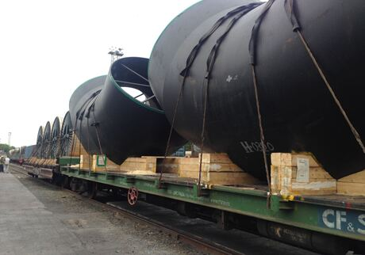
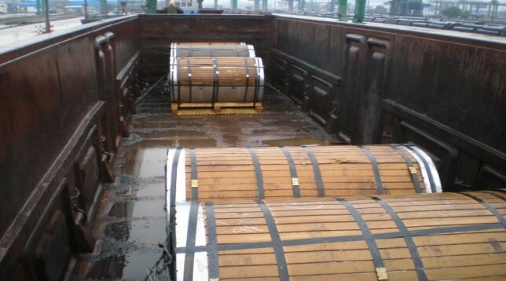
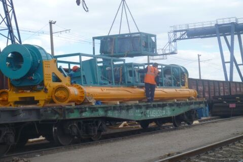
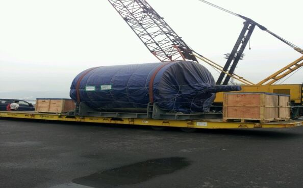
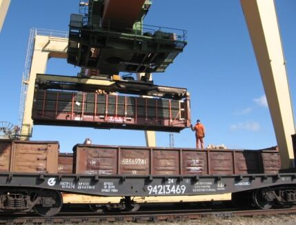
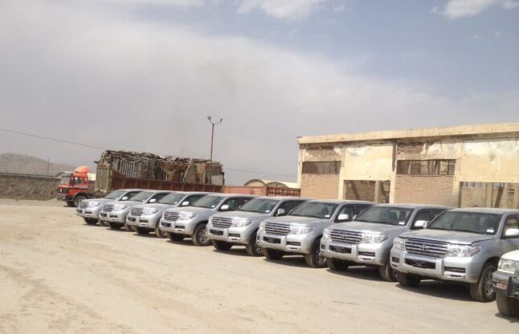
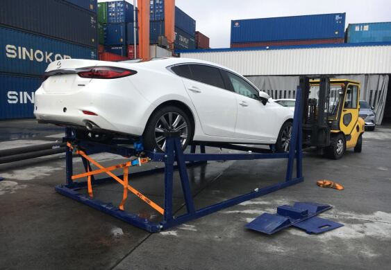

Трубные колена на платформе
Крупногабаритные трубные изделия: схема крепления и железнодорожная доставка.
Контейнерные и конвенциональные грузы, включая тяжеловесные и негабаритные.
Организуем перевозки на основании договоров с РЖД и железными дорогами СНГ. Разрабатываем схемы крепления, привлекаем сюрвейеров, обеспечиваем сопровождение, охрану и отслеживание груза.
| Пример маршрута |
|---|
| Сахалин → ОАЭ |
| Китай → Тобольск (СИБУР) |
| Трансформаторы 140–180 т → Магадан |
| Пусан → Москва |
| Корея → Кострома (через Санкт-Петербург) |
| Эстония, Рига → Кабул; Афганистан → Бишкек |

Крупногабаритные трубные изделия: схема крепления и железнодорожная доставка.

Перевалка гусеничной техники с судна на платформу.

Перевозка рулонов в полувагонах с индивидуальной схемой крепления.

Погрузка многотонного оборудования с использованием кранов.

Крупные ёмкости на платформах, транспортировка с сопровождением.

Перегрузка и доставка тяжеловесов по железной дороге.

Партионная перевозка автомобилей: Корея — Россия.

Технология: 3–4 автомобиля в 40HC, погрузка и крепление вне контейнера.
Оставьте маршрут и параметры груза — менеджер ответит в рабочее время.